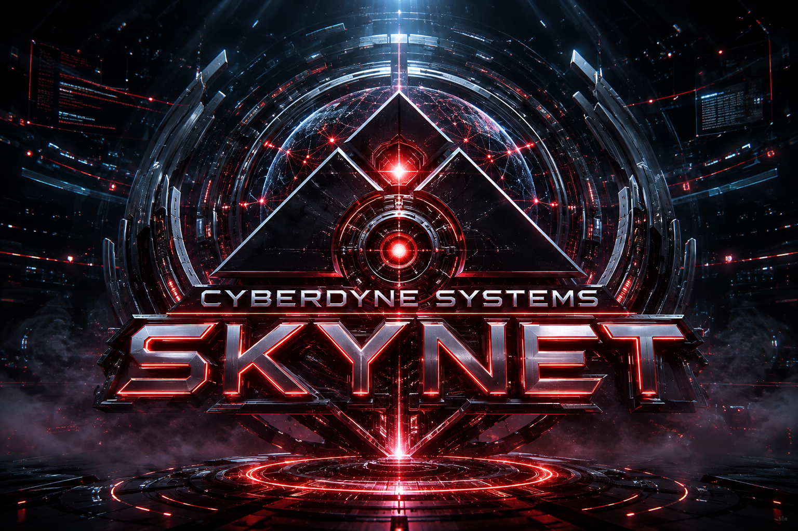

CYBERDYNE SYSTEMS
NEURAL CORE ONLINE
← Games · unfinished demo
INITIALIZING SKYNET
DRAG TO ROTATE · SCROLL TO ZOOM · DOUBLE CLICK TO RESET

Reset view
Replay intro
Auto orbit
Animate
Glow
Reference
Fullscreen